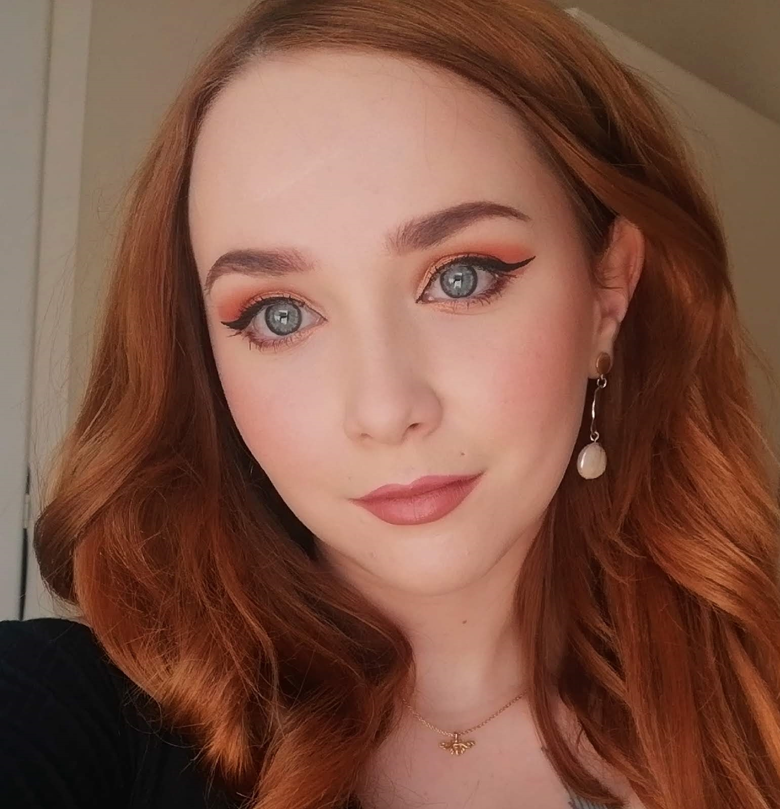

Hello, my name is Christina and I’m from Portland, Oregon, USA. Formerly a pharmaceutical clinical researcher for 18+ years, I’m currently a university archives coordinator and working toward my Master of Library and Information Science at Indiana University—Purdue University Indianapolis, specializing in archives management. Completely new to both programming languages and video gaming, I’ve been enjoying learning about both topics during this course and I’m excited to share what I’ve learned so far.
Meet the Team
this is the first option for our boxes, names which when clicked, open a drop down with a flippable image upon hovering (right now this only works under Gabrielle as I don't have images of everyone)

Hi, I’m Gabrielle, I study Business Information Technology at Haaga-Helia University of Applied Sciences with a core focus and passion on programming and design. I moved to Finland from South Africa in December 2020 with my partner. I have about 7 years of experience working as a hairstylist, gaining a keen eye for detail, design, and beauty, as well as communication skills which I hope to utilize in my new career path of software development. I enjoy spending my free time reading, watching sci-fi /fantasy films, or playing fantasy/sci-fi games. When I do venture outdoors on occasion, I enjoy exploring the beautiful nature Finland has to offer.
Hello, my name is David Fiora and I am a graduate student in the Master of Library and Information Science program at IUPUI, specializing in Archival Studies. Prior to coming to IUPUI, I earned a Bachelor of Arts in History with a minor in Political Science and an undergraduate certificate in Legal Studies from the University of Cincinnati. Currently, I work for the Public Library of Hamilton County and Cincinnati. I enjoy how I am able to make a difference in peoples’ lives through the work that I do as a librarian. This collaboration with Haaga Helia will improve not only my technology skills, but also my project management and team work skills inside the library.
Hi, my name is Giulia (or Julia if you like), a Business IT fresher from Haaga-Helia University of Applied Sciences. I am originally from Italy but moved to Finland in 2018 and been living here ever since. I earned my bachelor’s degree in foreign languages, linguistics and literatures and I worked many years in customer service but recently discovered my interest in programming and service design. Now I am nurturing this passion and making it my own career. I am a coding and food enthusiast; I love video games and nature.
Hi, my name is Teryn Morgan and I’m from North Carolina attending Indiana University—Purdue University Indianapolis to study Biomedical Informatics with a minor in Anthropology. I greatly enjoy the logical thinking processes that are necessary to solve computational problems and have a passion for integrating informatics solutions into healthcare applications. Outside of the classroom, I enjoy reading, watching anime, being active outdoors!
this is the end of the first option for our boxes
next option for the boxes starts here, a flip around image inside the same box as the name, image flips upon hovering,
when clicking box it opens the drop down with about us info